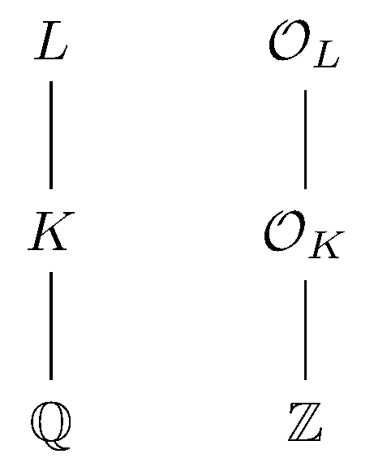

September 9th
Today I learned the definition of the different. Consider the standard setup:
Then fix some additive subgroup $A\subseteq L.$ We define $A^{-1}$ the same way we define the inverse of fractional ideals, and we define $A^*$ by\[A^*=\{\alpha\in L:\op T_K^L(\alpha A)\subseteq\mathcal O_K\}.\]This is slightly weaker than asserting $\alpha A\subseteq\mathcal O_L$ (so $A^*\subseteq A^{-1}$) but I don't have an intuitive feel for this thing yet. Then the $\textit{different}$ is $\diff A=(A^*)^{-1}.$ Of note is that $A$ is not necessarily a fractional ideal.